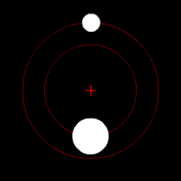
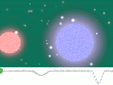
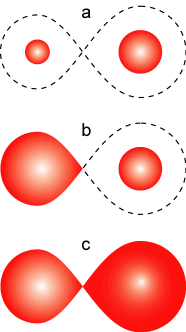
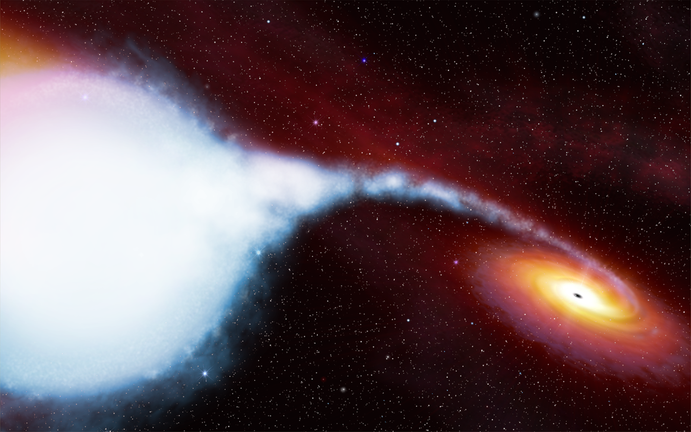
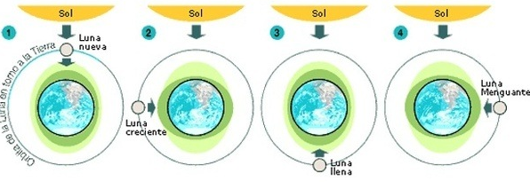
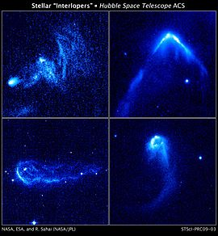
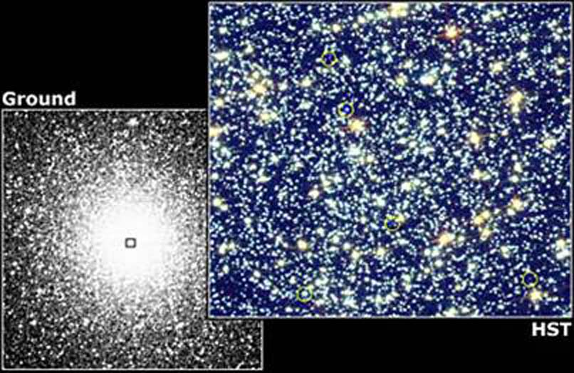

Cuando hablamos de evolución estelar, consideramos las etapas evolutivas de las estrellas individualmente. Sin embargo, más del 50% de las estrellas pertenecen a sistemas binarios, es decir, a sistemas compuestos de dos estrellas que orbitan mutuamente alrededor de un centro de masas común.


Figura 1: Ejemplos de sistemas binarios orbitando alrededor del centro de masa común (en el primer caso, las masas de las estrellas son bastante distintas y en el segundo son muy similares).
Entonces, resulta de vital importancia poder definir cómo evolucionan las estrellas cuando tienen una compañera, porque, aunque algunos pares de estrellas orbitan tan alejadamente una de otra como para evolucionar de forma independiente, en muchas ocasiones las binarias se encuentran a distancias tan cortas que su progreso individual se ve alterado por los cambios que sufre su compañera.
Hay varias teorías sobre cómo se forman estos sistemas. La más aceptada es que son creados durante la formación de la estrella: la nube molecular se fragmenta durante la formación de la protoestrella. Pero también pueden ocurrir capturas en cúmulos estelares densos.
Los sistemas binarios pueden clasificarse de las siguientes maneras:
- Según su modo de detección: se clasifican en binarias visuales, eclipsantes, astrométricas, espectroscópicas y ópticas (ver Binarias Eclipsantes)


Figura 2: Ejemplos de binarias eclipsantes y su curva de luz (en la segunda, se observa intercambio de masa).
- Según la configuración del sistema: se clasifican en binarias separadas (ninguna de las estrellas del par llena su lóbulo de Roche), binarias semiseparadas (una de las estrellas del par llena su lóbulo de Roche) y binarias interactuantes (ambas estrellas del par llenan su lóbulo de Roche).

Figura 3: a) Binarias separadas. b) Binarias semi separadas. c) Binarias interactuantes.
Cómo afecta la binaridad a la evolución estelar:
Transferencia de masa:
Una de las maneras en que la evolución estelar se ve afectada en los sistemas binarios, es por el mecanismo de transferencia de masa. Este mecanismo está ligado a los procesos de evolución de las estrellas que forman parte del sistema: cuando alguna de las componentes del sistema aumenta su tamaño, puede exceder el lóbulo de Roche y su masa caerá sobre la compañera haciendo una espiral formando un disco denominado "disco de acreción". Cuando la acreción se da sobre un objeto colapsado, la aceleración del gas es muy grande y las temperaturas de los discos llegan a ser de millones de grados. Este tipo de binarias se denominan binarias de rayos X (ver Variables en Rayos-X (SFXTs) ).
Cuando la masa de la compañera invisible es menor a 1.4 masas solares (enana blanca) finaliza su vida como una nova o una supernova de tipo Ia (la enana blanca supera el límite de Chandrasekhar gracias a la donación de masa de su compañera y colapsa en un evento de supernova); la masa de la compañera invisible también puede estar entre 1.4 y 3 masas solares (estrella de neutrones) o ser mayor a 3 masas solares (agujero negro). Ya que no es posible detectar agujeros negros aislados, la existencia de estos últimos en sistemas binarios permite detectarlos, observando los efectos que estos producen sobre su compañera.

Figura 4: Representación artística de Cignus X-1: sistema binario de rayos X en el que puede observarse el proceso de transferencia de masa y el disco de acreción alrededor del objeto compacto.
Fuerzas de marea:
Además, la forma de cada componente del sistema binario se ve afectada no solo por la rotación intrínseca del astro, que produce un achatamiento en los polos, sino también por la deformación por mareas que genera una sobre la otra. Esta deformación se debe a que las estrellas no son objetos rígidos, son esferas de gas que se pueden deformar o achatar, tal como la Tierra es deformada por los efectos de marea provocados por la Luna y el Sol (o sea, en cada estrella se produce una elongación en la dirección de la estrella compañera).

Figura 5: Ejemplo de como actúan las fuerzas de marea generadas por la Luna y el Sol sobre la Tierra.
Para reproducir el comportamiento de la estructura estelar bajo los efectos de la rotación y las mareas, pueden utilizarse las ecuaciones de hidrodinámica. Las ecuaciones de equilibrio hidrostático son válidas para configuraciones estelares con ambos efectos y muestran que las superficies con iguales densidades, presiones y composición química tienen igual potencial. Entonces, el problema se reduce a la evaluación del potencial debido a todas las fuerzas actuantes sobre algún punto de la configuración.
En los sistemas binarios en que las estrellas se encuentran separadas por grandes distancias, puede pasar que lleguen a perder su atracción gravitatoria debido a perturbaciones externas al sistema y terminar siendo estrellas solitarias. Otro suceso posible es el de que un encuentro cercano entre dos sistemas binarios de como resultado la separación de ambas componentes del sistema debido a la disputa gravitacional entre los objetos, siendo una de las estrellas repelida a grandes velocidades, dando como resultado una estrella fugitiva (estrella que se mueve a través del espacio con una velocidad muy alta en comparación con las demás estrellas de su entorno). Las estrellas fugitivas también pueden generarse como resultado de la explosión de supernova de una de las componentes del sistema binario.

Figura 6: Ejemplos de estrellas fugitivas.
Otra consecuencia de los sistemas binarios, es la existencia de enanas blancas de helio. Según los modelos de evolución estelar, estos objetos no deberían encontrarse en el universo debido al tiempo que le llevaría a una estrella de menos de media masa solar llegar al término de su vida, en comparación con la edad del universo. Pero en sistemas binarios puede ocurrir que la más masiva agote antes el hidrógeno y empiece a expandir su envoltura, para formar una gigante roja. Cuando la envoltura de hidrógeno llega a engullir a la estrella compañera, se crea una inestabilidad en la envoltura de la gigante, desligando gravitatoriamente al gas circundante. Esto hace que la estrella masiva vaya perdiendo masa continuamente y expandiendo más su atmósfera. Finalmente, desaparece la atmósfera de hidrógeno completamente y queda el núcleo desnudo de helio. Si este núcleo no es capaz de fusionar helio, se generará una enana blanca de helio.
De interés: Estrellas rezagadas azules

Figura 7: comparación de dos fotografías, una tomada desde la Tierra y otra desde el Hubble. En la de la derecha, aparecen rodeadas de amarillo 5 estrellas rezagadas azules.
¿Qué son las estrellas rezagadas azules?
Son estrellas que aparentan una edad menor que la del sistema estelar al que pertenecen, si se supone que se formaron juntos: en los diagramas HR que representan al sistema, aparecen aisladas y prolongando la secuencia principal, cuando estrellas en esa zona ya deberían haber evolucionado hacia otra región, según los modelos de evolución estelar.
Las tres teorías principales de formación de estrellas rezagadas azules son: colisiones entre estrellas, fusiones de estrellas y transferencia de masa de una estrella a otra.
¿Cómo se relacionan con los sistemas binarios?
Un grupo de astrónomos estudio el cúmulo NGC 188, donde habían sido observadas 21 estrellas rezagadas azules. Encontraron que la mayoría de estas estrellas estaban en sistemas binarios y, para analizarlas, descartaron las dos primeras teorías. Se determinó (no por observación directa, sino por los efectos que producía sobre la estrella rezagada azul) que la estrella compañera en todos los casos era una enana blanca, por lo que se estimó que la causa de la existencia de la rezagada azul era la transferencia de masa.
En esta transferencia, la rezagada azul despoja mediante su campo gravitatorio poco a poco a la estrella compañera su material. Este material es utilizado como combustible, permitiéndole mantener su proceso de fusión y vivir más tiempo. En este proceso deja a su estrella compañera despojada de sus capas externas, lo que la convierte en una enana blanca (¡se condice con las observaciones!).
Esto deja a los sistemas binarios como principales candidatos (al menos, en este cúmulo) a productores de estrellas rezagadas azules.
Sin embargo, no se descarta que alguna de estas estrellas haya sido formada por otro de los mecanismos y no se ha podido estudiar aún que ocurre con las que, aparentemente, no pertenecen a sistemas binarios.
Conclusión:
En la actualidad, hay muchos modelos enfocados en la evolución estelar de estrellas aisladas. Dado que sabemos que más de la mitad de las estrellas son binarias y que, como hemos explicado anteriormente, estas evolucionan diferente a las estrellas aisladas, se nos presenta la necesidad de incorporar esto a los estudios poblacionales para lograr comprender las observaciones.
Bibliografía:
- Clase de Unidad 14: La relación Masa-Luminosidad y distribución de masas.
- Sistemas binarios y la evolución estelar. G. Koenigsberger.
- Physical Processes in Close Binary Systems. Antonio Claret, Alvaro Giménez.
- Estrella Binaria. Wikipedia.
- Estrella Fugitiva. Wikipedia.
- Evolución estelar - 2da parte. Página de la cátedra de Astronomía General UNLP.